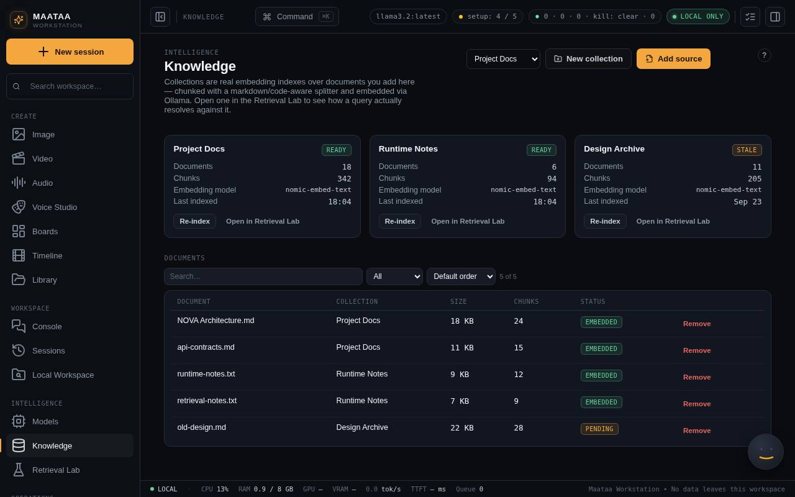
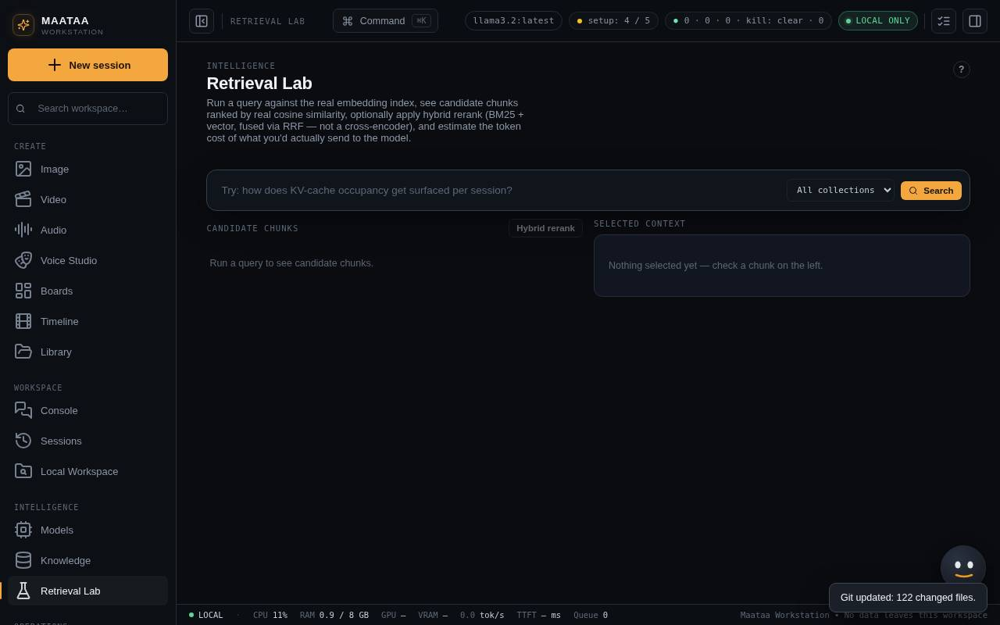

Knowledge and Retrieval Lab
Make document collections the models can cite, and test what search returns before you rely on it.
Knowledge collections
- Open Knowledge and create a collection with a clear purpose, for example "Product requirements".
- Add documents: text, Markdown, HTML, PDF and similar text-based files, or paste text. Transcripts from Media can land in a collection too.
- Maataa splits each document into chunks and makes embeddings with Ollama. Wait for the document's status and chunk count before relying on it.

Deleting a document removes it and its index entries. Keep an original copy elsewhere if it matters.
Retrieval Lab
Retrieval Lab shows what a search returns before you use it in chat, an automation or an agent.
- Pick a collection and type a question.
- Each result shows the passage, its rank and score, the source document and a token estimate.
- Hybrid combines keyword ranking (BM25) with vector similarity using reciprocal-rank fusion. It is not a cross-encoder reranker.

Use it to find missing, badly split or irrelevant material. Results depend on your embedding model and on what the collection contains.
Using collections in chat
Turn on Retrieval under the Console's message box. Maataa adds the best passages to the prompt, and the answer shows them as citation chips. The inspector's Sources and Retrieval tabs show everything that was retrieved.